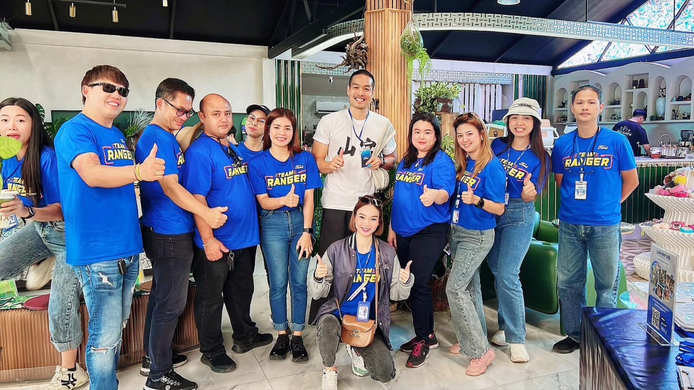
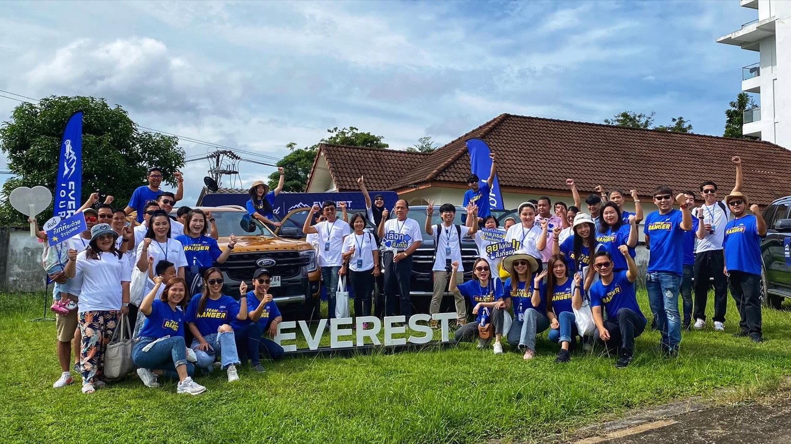

2023 · venture · note
Anuphas Ford hosts an Everest test drive with a tie-dye activity


Original text in Thai
ขอบคุณทีมอนุภาษฟอร์ดทั้งขายและศูนย์บริการ ทีมฟอร์ดประเทศไทย ทีมจัดงานสถานที่ทุกๆคนนะคับ 💙
งานดีและสมบูรณ์แบบสุดๆ กิจกรรมทดสอบรถ Everest พาลูกค้าตะลุยเส้นทาง unseen ฉลุยบ้าง ติดหล่มบ้าง แต่รถเอาอยู่ 🎉 บวกกิจกรรมผ้ามัดย้อมสวยๆ ของกินเพียบ สถานที่ดีทั้งเบเกอรี่ ข้าวกล่อง เครื่องดื่มจุกๆ แล้วพบกันใหม่คับ 😇💙
#everestjourney ✨
#ฟอร์ดประเทศไทย ⭐️
#อนุภาษฟอร์ด 💙
#บ้านอาจ้อ ❤️